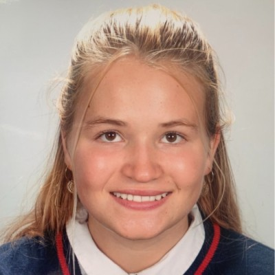

Hello, I'm Camille :)
As a 1st year student in the IESEG Grande École Program, I am determined to enrich my international career by taking advantage of exchange and internship opportunities.I developed a multicultural openness during my 4-year family expatriation in the United States. Passionate about the field of economics, adaptable, curious and attentive, I wish to develop my skills within an international company with meaning and a positive impact on society.
Travels
To open up to the world and discover other cultures. Volcano climbing in Indonesia. Trekking and immersion among locals in Africa, Asia and America.
Economy
Passionate about the field of economics an mathematics, I was lucky enough to take part in the general economics and social sciences competition.
Association Les Lumières du Handicap
I organize activities for children with disabilities and go to centers to set up these activities and have contact with the children.